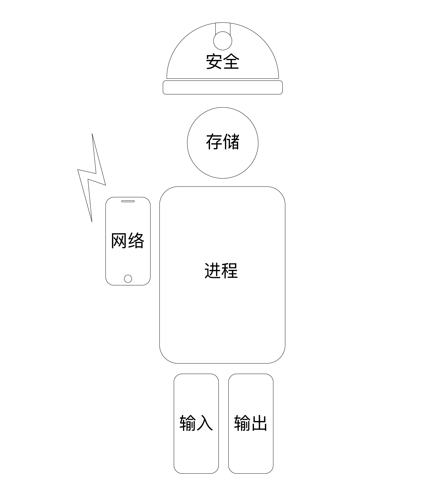

- 00 开篇词 怎样成长为优秀的软件架构师？.md.html
- 01 架构设计的宏观视角.md.html
- 02 大厦基石：无生有，有生万物.md.html
- 03 汇编：编程语言的诞生.md.html
- 04 编程语言的进化.md.html
- 05 思考题解读：如何实现可自我迭代的计算机？.md.html
- 06 操作系统进场.md.html
- 07 软件运行机制及内存管理.md.html
- 08 操作系统内核与编程接口.md.html
- 09 外存管理与文件系统.md.html
- 10 输入和输出设备：交互的演进.md.html
- 11 多任务：进程、线程与协程.md.html
- 12 进程内协同：同步、互斥与通讯.md.html
- 13 进程间的同步互斥、资源共享与通讯.md.html
- 14 IP 网络：连接世界的桥梁.md.html
- 15 可编程的互联网世界.md.html
- 16 安全管理：数字世界的守护.md.html
- 17 架构：需求分析 (上).md.html
- 18 架构：需求分析 (下) · 实战案例.md.html
- 19 基础平台篇：回顾与总结.md.html
- 20 桌面开发的宏观视角.md.html
- 21 图形界面程序的框架.md.html
- 22 桌面程序的架构建议.md.html
- 23 Web开发：浏览器、小程序与PWA.md.html
- 24 跨平台与 Web 开发的建议.md.html
- 25 桌面开发的未来.md.html
- 26 实战（一）：怎么设计一个“画图”程序？.md.html
- 27 实战（二）：怎么设计一个“画图”程序？.md.html
- 28 实战（三）：怎么设计一个“画图”程序？.md.html
- 29 实战（四）：怎么设计一个“画图”程序？.md.html
- 30 实战（五）：怎么设计一个“画图”程序？.md.html
- 31 辅助界面元素的架构设计.md.html
- 32 架构：系统的概要设计.md.html
- 33 桌面开发篇：回顾与总结.md.html
- 34 服务端开发的宏观视角.md.html
- 35 流量调度与负载均衡.md.html
- 36 业务状态与存储中间件.md.html
- 37 键值存储与数据库.md.html
- 38 文件系统与对象存储.md.html
- 39 存储与缓存.md.html
- 40 服务端的业务架构建议.md.html
- 41 实战（一）：“画图”程序后端实战.md.html
- 42 实战（二）：“画图”程序后端实战.md.html
- 43 实战（三）：“画图”程序后端实战.md.html
- 44 实战（四）：“画图”程序后端实战.md.html
- 45 架构：怎么做详细设计？.md.html
- 46 服务端开发篇：回顾与总结.md.html
- 47 服务治理的宏观视角.md.html
- 48 事务与工程：什么是工程师思维？.md.html
- 49 发布、升级与版本管理.md.html
- 50 日志、监控与报警.md.html
- 51 故障域与故障预案.md.html
- 52 故障排查与根因分析.md.html
- 53 过载保护与容量规划.md.html
- 54 业务的可支持性与持续运营.md.html
- 55 云计算、容器革命与服务端的未来.md.html
- 56 服务治理篇：回顾与总结.md.html
- 57 心性：架构师的修炼之道.md.html
- 58 如何判断架构设计的优劣？.md.html
- 59 少谈点框架，多谈点业务.md.html
- 60 架构分解：边界，不断重新审视边界.md.html
- 61 全局性功能的架构设计.md.html
- 62 重新认识开闭原则 (OCP).md.html
- 63 接口设计的准则.md.html
- 64 不断完善的架构范式.md.html
- 65 架构范式：文本处理.md.html
- 66 架构老化与重构.md.html
- 67 架构思维篇：回顾与总结.md.html
- 68 软件工程的宏观视角.md.html
- 69 团队的共识管理.md.html
- 70 怎么写设计文档？.md.html
- 71 如何阅读别人的代码？.md.html
- 72 发布单元与版本管理.md.html
- 73 软件质量管理：单元测试、持续构建与发布.md.html
- 74 开源、云服务与外包管理.md.html
- 75 软件版本迭代的规划.md.html
- 76 软件工程的未来.md.html
- 77 软件工程篇：回顾与总结.md.html
- 加餐 如何做HTTP服务的测试？.md.html
- 加餐 实战：“画图程序” 的整体架构.md.html
- 加餐 怎么保障发布的效率与质量？.md.html
- 热点观察 我看Facebook发币（上）：区块链、比特币与Libra币.md.html
- 热点观察 我看Facebook发币（下）：深入浅出理解 Libra 币.md.html
- 用户故事 站在更高的视角看架构.md.html
- 答疑解惑 想当架构师，我需要成为“全才”吗？.md.html
- 结束语 放下技术人的身段，用极限思维提升架构能力.md.html
- 课外阅读 从《孙子兵法》看底层的自然法则.md.html
- 捐赠
06 操作系统进场
你好，我是七牛云许式伟。
在编程语言出现后，软件生产效率得到了大幅度的提升。随着越来越多软件的出现，自然而然就诞生了多个软件如何共处，也就是软件治理的需求。比如下面的这些需求场景。
- 多个软件如何同时运行（多任务的需求）？
- 多个软件如何共同使用计算机上的存储空间（内存管理、文件系统的需求）？
- 多个软件如何共同使用同一个外部设备（设备管理的需求）？
- 多个软件如何相互通讯，如何进行数据交换（进程间通讯、共享内存的需求）？
- 病毒、恶意软件如何治理（安全管理的需求）？
如果没有一个中间的协调方，软件与软件之间并不知道彼此的存在，你不难想象出，这种没有统一规则约束下的场面，会有多么凌乱。
于是，操作系统就出现了。对于软件而言，它像一个大法官，制定规则并据此约束大家的行为。
操作系统的启动过程
操作系统是怎么获得执行权的？
这是计算机主板ROM上的启动程序（BIOS）交给它的。
计算机加电启动后，中央处理器（CPU）会从一个固定的存储地址加载指令序列执行。通常，这个固定的存储地址指向计算机主板的ROM上的一段启动程序（BIOS）。这段启动程序通常包含以下这些内容。
- 存储设备的驱动程序，用以识别常规的外置存储设备，比如硬盘、光驱、U盘。
- 基础外部设备的驱动程序，比如键盘、鼠标、显示器。
- 设备和启动配置的基础管理能力。
- 支持执行外置存储中引导区的机器代码程序。
- 跳转到外置存储引导区的固定地址，把执行权交给该地址上的引导程序。
引导区的引导程序有长度限制（关于这一点我在上一讲已经介绍过），只能做非常少的事情。在常规情况下，它只是简单地跳转到真正的操作系统的启动程序，但有时计算机上安装了多个操作系统，此时引导程序会提供菜单让你选择要运行的操作系统。
这样，操作系统就开始干活了。
操作系统的需求演进
那么，操作系统是做什么的？前面我们说的“软件治理”是否可以涵盖它完整的目标？
让我们从操作系统的发展历程说起。
最早期的计算机是大型机。这个时期的计算机笨重、昂贵，并且操作困难，主要使用人群是搞科研性质的科学家或其他高端人群。
虽然这个时期催生了 IBM 这样的硬件巨头，但大多数人根本就意识不到，这玩意儿对后世人们的生活能够产生如此翻天覆地的变化。
这个时期的计算机还是单任务的，以计算为主，软件为操作硬件服务。如果我们认为“软件治理”是操作系统的根源需求的话，那么可以认为这个时期还不存在操作系统。但的确会有一些辅助工具库来简化用户使用计算机的负担，我们可以把它看做操作系统的萌芽。
从这个意义来说，提供计算机的“基础编程接口”，降低软件开发的负担，是操作系统更为原始的需求。
此后，小型机和个人计算机（PC）的崛起，分别诞生了 UNIX 和 DOS 这两个影响深远的操作系统。 UNIX 就不用说了，它几乎算得上今天所有现代操作系统的鼻祖。
DOS 的历史非常有趣。首先是 IBM 没把操作系统当回事儿，把这个活儿包给了微软。然后是微软只花了 5 万美元向西雅图公司购买了 86-DOS 操作系统的版权，更名为 MS-DOS。
那么 86-DOS 是怎么来的？西雅图公司的一个24岁小伙叫蒂姆·帕特森（Tim Paterson），单枪匹马花了4个月时间写出来的。
可以看到，这个时期人们对操作系统并没有太深刻的认知，多数人只把它看做硬件的附属品。IBM 不把它当回事，西雅图公司也没把它当回事，几万就把它卖了。只有微软认认真真地把它当做生意做了起来（在此之前微软的生意是卖 BASIC 语言的解析器起家，所以微软一直对 BASIC 语言情有独钟，直到很久以后微软搞出了 C# 语言后，情况才有所改变）。
等到 IBM 意识到操作系统是个金蛋，改由自己做 PC-DOS 操作系统的时候，微软已经通过推动 PC 兼容机的发展，让操作系统不再依赖特定的硬件设备，微软也就因此脱离 IBM 的臂膀，自己一飞冲天了。
回到问题。要回答操作系统在做什么，我们可以从客户价值和商业价值两个维度来看。
客户价值来说，操作系统首先要解决的是软件治理的问题，大体可分为以下六个子系统：进程管理、存储管理、输入设备管理、输出设备管理、网络管理、安全管理等。

操作系统其次解决的是基础编程接口问题。 这些编程接口一方面简化了软件开发，另一方面提供了多软件共同运行的环境，实现了软件治理。
商业价值来说，操作系统是基础的刚需软件。计算机离开了操作系统就是一堆废铜烂铁。随着个人计算机采购需求的急速增加，光靠软件 License 的费用就让操作系统厂商赚翻了。
虽然第一个广为人知的操作系统是 UNIX，但从商业上来说最成功的操作系统则是 DOS/Windows，成就了微软的霸主地位。
为什么是 DOS/Windows 赢得了市场，这无关技术优劣，关键在于两者的商业路线差异：UNIX 走的是企业市场，而 DOS/Windows 选择了更为巨大的市场：个人计算机（PC）市场。
操作系统也是核心的流量入口。占领了操作系统，就占有了用户，想推什么内容给用户都很容易。微软对这一点显然心知肚明。
这也是为什么当年网景推 Netscape 浏览器的时候，微软很紧张。因为浏览器是另一个软件治理的入口，本质上是操作系统之上的操作系统。如果软件都运行在浏览器上，那么本地操作系统就沦为和硬件一般无二的管道了。
虽然早期操作系统没有应用市场（AppStore），但是通过操作系统预装软件的方式向软件厂商收租，这是一直以来都有的盈利方式。国内盗版的番茄花园 Windows 发行版就是通过在 Windows 系统上预装软件来盈利。
当然预装软件只是一种可能性，流量变现的方式还有很多。苹果的 iOS 操作系统开启了新的玩法，它构建了新的商业闭环：账号（Account）、支付（Pay）、应用市场（AppStore）。
我们把这个商业模式叫收税模式。帐号（注意是互联网账号，不是过去用于权限管理的本地账号）是前提。没有帐号，就没有支付系统，也没有办法判断用户是否购买过某个软件。
应用市场实现了应用的分发，既解决了系统能力的无限扩展问题（客户价值），也解决了预装软件的软件个数总归有限的问题（商业价值）。支付则是收税模式的承载体，无论是下载应用收费，还是应用内购买内容收费，都可以通过这个关卡去收税。
无论是本地操作系统 iOS 和 Android，还是 Web 操作系统（浏览器）如微信小程序，都实现了“帐号-支付-应用市场”这样的商业闭环。这类操作系统，我们不妨把它叫做现代操作系统。

操作系统的边界在哪里？
架构的第一步是需求分析。上一讲我提到了在架构设计过程中，需求分析至少应该花费三分之一的精力。通过这一节我们对操作系统演进过程的回顾，你可能更容易体会到这一点。
当我们说要做一个操作系统的时候，实际上我们自己对这句话的理解也是非常模糊的。尤其是我们正准备去做的事情是一个新生事物时，我们对其理解往往更加粗浅。
在本专栏[开篇词]中我也提过，架构也关乎用户需求，作为架构师我们不只是要知道当前的用户需求是什么，我们还要预测需求未来可能的变化，预判什么会发生，而什么一定不会发生。
我们可以问一下自己：我是否能够预料到，有一天支付（Pay）系统会成为操作系统的核心子系统？如果不能，那么怎么才能做到？
操作系统的边界到底在哪里？
要回答这个问题，我们需要看清楚这样三个角色的关系：
- 硬件（个人计算机、手机或其他）；
- 操作系统；
- 浏览器。
首先我们来看操作系统与硬件的关系。如果操作系统厂商不做硬件会怎样？我们知道个人计算机（PC）市场就是如此。微软虽然占据了 PC 操作系统（DOS/Windows）绝大部分江山，但是它自身并不生产硬件。这里面，PC 兼容机的发展对 DOS/Windows 的发展有着至关重要的支撑意义。它让操作系统厂商有了独立的生存空间。
到了移动时代，Google 收购 Android 后，通过免费策略占领移动操作系统的大半江山，一定程度上复制了微软的过程，但实际上并没有那么理想。
首先，Android 是免费的，Google 并没有从中收取软件 License 费用，而是借助 Android 的市场占有率来推动 Google 的服务（例如搜索、Gmail 等等），通过 Google 服务来获取商业回报。
其次，iOS 操作系统引入的 “账号-支付-应用市场” 的收税模式，受益方是硬件（手机）厂商，而非操作系统厂商。其中最关键的一点，几乎所有手机厂商都不接受把支付（Pay）这个核心系统交给 Google。
最后，不止支付系统，一旦手机厂商长大立足 ，Google 服务也会被逐步替换。所以 Google 和 Android 手机厂商之间的联盟并不可靠，养肥的手机厂商会不断试探 Google 的底线，而 Google 也会尝试去收紧政策，双方在博弈中达到平衡。
之所以会这样，我觉得原因有这么几个：
其一，历史是不可复制的，人们对操作系统的重要性认知已经非常充分。所以大部分手机厂商，都不会放弃操作系统的核心子系统的主控权。Android 系统的开源策略无法完全达到预期的目标，这也是 Google 最终还是免不了要自己做手机的原因。
其二，手机是个性化产品，硬件上并没有 PC 那么标准化。所以个人计算机有兼容机，而手机并没有所谓的标准化硬件。
分析完操作系统和硬件的关系，我们再来看它和浏览器的关系。在 PC 时期，操作系统和浏览器看起来至少需求上是有差异化的：操作系统，是以管理本地软件和内容为主（对内）。浏览器，是以管理互联网内容为主（对外）。
但，这个边界必然会越来越模糊。
操作系统不涉足互联网内容？这是不可能的。应用市场（AppStore）其实就是典型的互联网内容；而另一方面，在浏览器的生态里也有一些特殊角色：网址导航、搜索引擎、Web 应用市场，它们共同构成了探索互联网世界的“地图”。
问题在于：
- 操作系统、浏览器和（互联网）搜索引擎的关系是什么；
- 移动时代的浏览器会是什么样的；它和操作系统的关系又如何相处？
欢迎把你对这几个问题的想法告诉我。
结语
让我们简单回顾下今天我所讲到的内容。
从客户需求来说，操作系统的核心价值在于：
- 实现软件治理，让多个软件和谐共处；
- 提供基础的编程接口，降低软件开发难度。
从商业价值来说，操作系统是刚性需求，核心的流量入口，兵家必争之地。所以，围绕它的核心能力，操作系统必然会不断演化出新的形态。
我们把引入了 “账号-支付-应用市场” 商业闭环的收税模式的操作系统，称为现代操作系统。
操作系统的边界到底在什么地方？我们通过分析硬件、操作系统、浏览器三者的关系，也做了定性的分析。这样的分析将有助于你对需求发展做出预判。
最后，你可以在留言区给我留言，分享你对于操作系统技术、商业的看法，让我们一起交流。
© 2019 - 2023 Liangliang Lee. Powered by gin and hexo-theme-book.